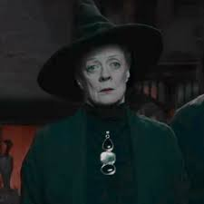
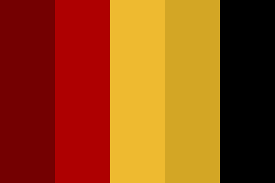
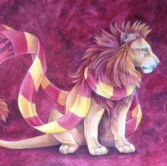
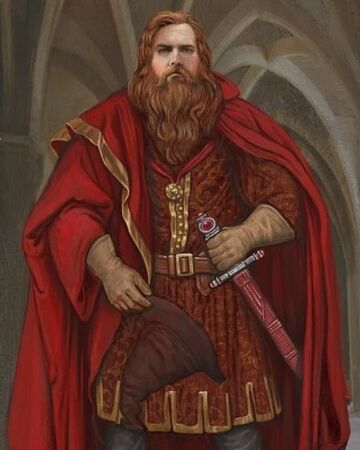
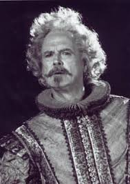
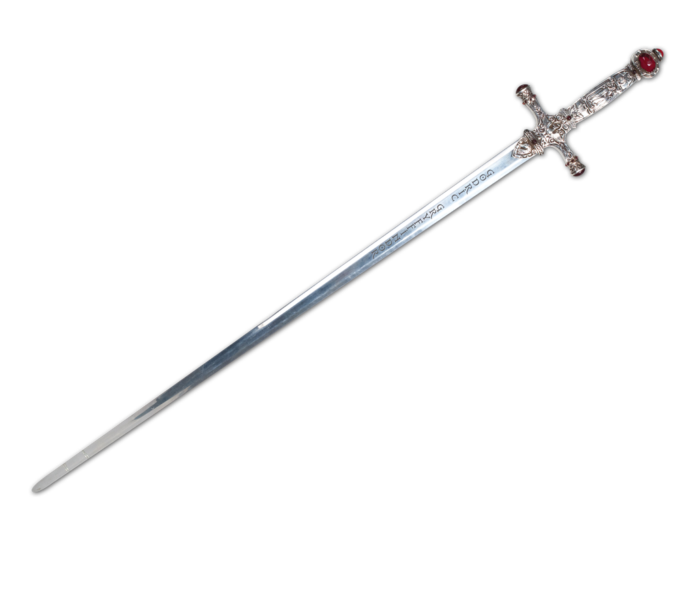
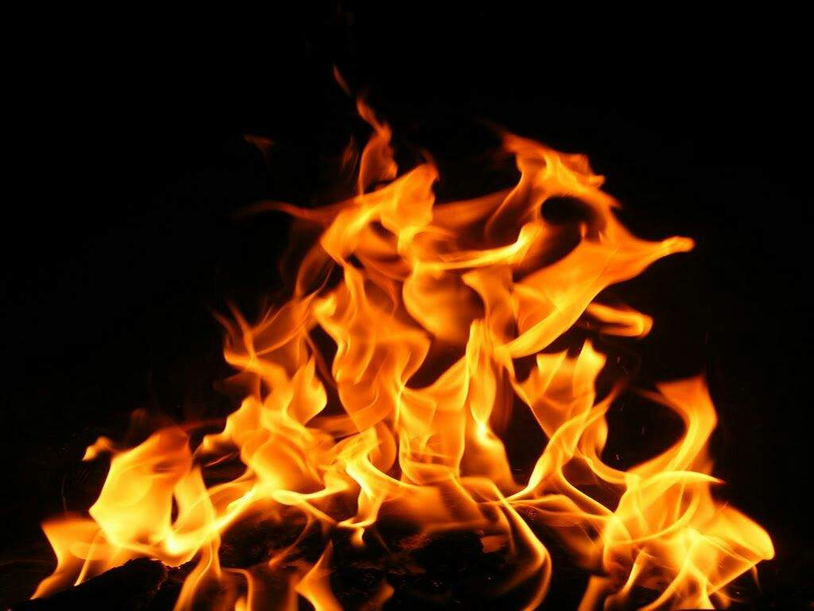

| Jefa de la casa | Minerva McGonagall.  |
| Colores representativos | Escarlata y dorado.  |
| Animal representativo | León.  |
| Fundador | Godric Gryffindor.  |
| Fantasma | Sir Nicholas de Mimsy-Porpington (más conocido como Nick Casi Decapitado).  |
| Características | Coraje y valentía. Un buen miembro de Gryffindor tiene gran osadía, temple y caballerosidad. Son capaces de todo por defender en lo que creen y nunca se dan por vencidos. También son capaces de romper las reglas si es necesario y les encantan los retos, cuanto más difíciles, mejor. Se atreven a lo que la mayoría no se atreve. En cada obstáculo ven una oportunidad para demostrar quienes son realmente. |
| Localización | La Torre de Gryffindor, o torre este, en el séptimo piso del castillo. A un lado de la torre oeste, o torre de Ravenclaw. |
| Curiosidad | Godric Gryffindor solo acogía a los magos valientes y honorables, ya que eso era lo que el fundador más apreciaba. |
| Reliquia más preciada | Su espada (perteneció a Godric Gryffindor), aunque también está el Sombrero Seleccionador,
que es el sombrero de Godric Gryffindor.  |
| }Significado del nombre | Grifo dorado. |
| Elemento de Gryffindor | Fuego, pues está asociado con el valor y el coraje de esta casa.  |
Para saber más sobre griffindor da click en la imagen
.png)
.png)
.png)
.png)
.png)
.png)
Da click en la imagen para continuar
información extraída de: https://harrypotter.fandom.com/es/wiki/Gryffindor